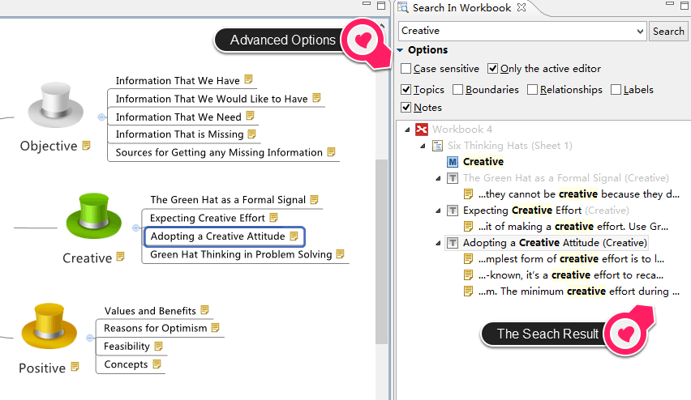

パワフル検索
パワフル検索は、すべての開いている XMind ブックの中から、目的の情報をすぐに見つけることができます。もっと重要なことは、すばやく目的まで案内するすることができることです。
- メニューから[表示]→[検索]をクリックして、検索ビューを開きます。
- 入力項目に、必要な情報を入力する。
- 大文字小文字を区別する、アクティブなエディターのみ、トピックス、囲み、などのようなオプションを選択します。
- [検索]ボタンをクリックして検索を開始します。
- すべての検索結果はツリー構造として表示されます。完全なコンテンツとの完全なっファイルパスを見ることができます。
